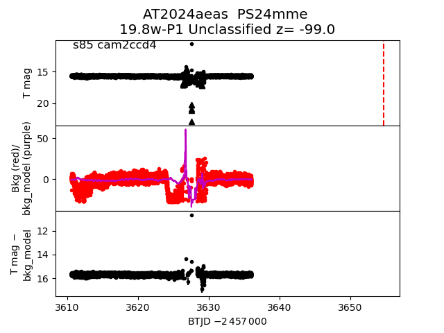
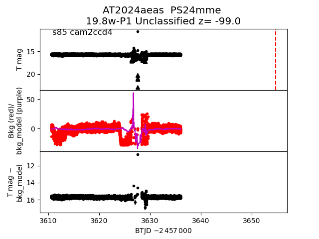
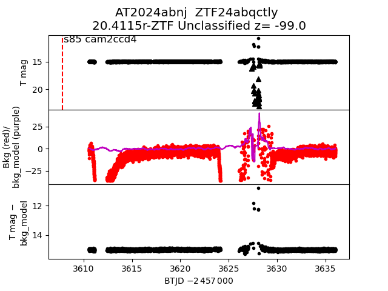
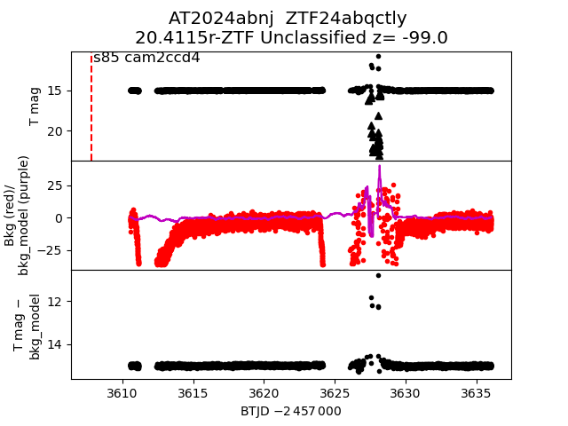
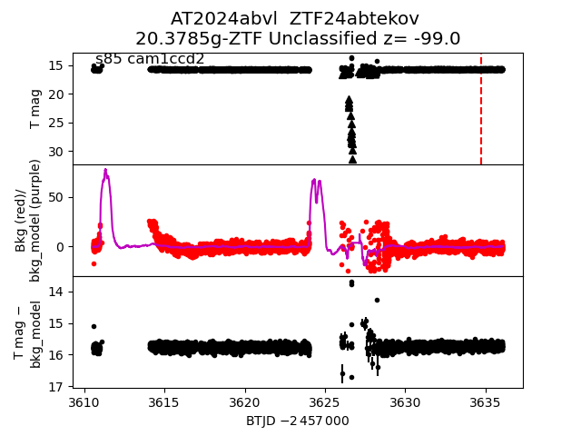
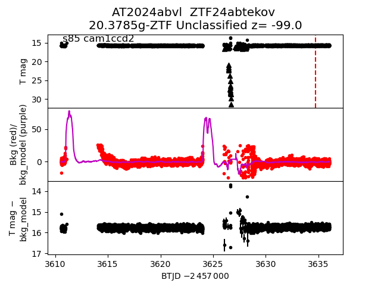
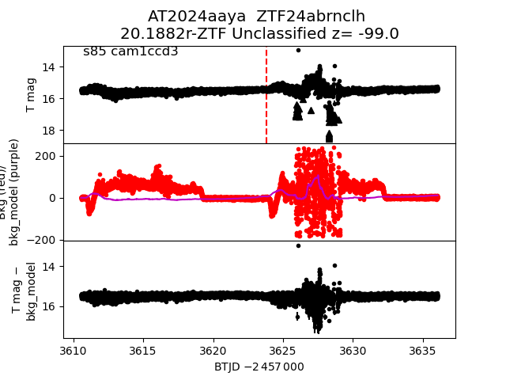
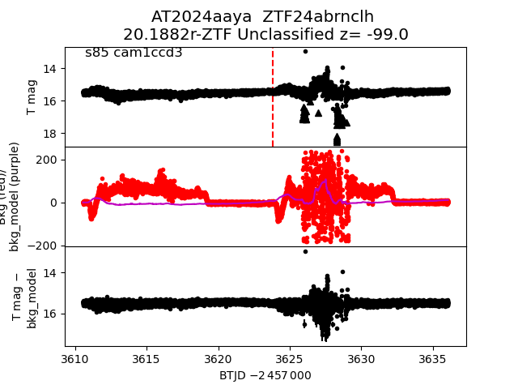

all transients in sector85 (104 total)
Each figure has three panels. The top panel shows the transient light curve, the middle panel shows the local background (estimated in an annulus), and the bottom panel shows a "background-model corrected" light curve. Details about the background model are in the README.
The vertical red line marks the time of discovery reported to TNS. Other useful metadata from TNS is in the figure title.
Note that the top and bottom panel are in magnitudes, while the middle panel is in differential flux units. The magnitudes are calibrated to the flux in the reference image used for image subtraction. Thus, flux from the host galaxy is included in these magnitudes.
3-sigma upper limits are plotted as triangles with no errorbars. A typical limiting magnitude is 19.6 in 30 minutes or 18.4 in 200 seconds (for low backgrounds).
The links allow you to download the light curve data as a text file.
More details in the README.
2024accc
2024aant
2024acxw
2024acep
2024aale
2024adhv
2024abrz
2024aeda
2024ablv
2024zod
2024adzj
2024zhd
2024abng
2024abaj
2024aakl
2024acpv
2024adub
2024abvt
2024aebw
 2024aaus
2024acah
2024abss
2024adfr
2024zav
2024aauz
2024abmv
2024aaus
2024acah
2024abss
2024adfr
2024zav
2024aauz
2024abmv
 2024aavg
2024adfn
2024advj
2024adhp
2024adfq
2024adwp
2024aecg
2024ztv
2024adpo
2024abkp
2024acxx
2024aaxl
2024aeas

2024aalo
2024abnd
2024adqy
2024abbk
2024aakp
2024zuv
2024aavg
2024adfn
2024advj
2024adhp
2024adfq
2024adwp
2024aecg
2024ztv
2024adpo
2024abkp
2024acxx
2024aaxl
2024aeas

2024aalo
2024abnd
2024adqy
2024abbk
2024aakp
2024zuv
 2024aaso
2024aava
2024aalf
2024abuf
2024adpc
2024ztz
2024aapu
2024zuq
2024abnj

2024aeds
2024aaso
2024aava
2024aalf
2024abuf
2024adpc
2024ztz
2024aapu
2024zuq
2024abnj

2024aeds
 2024admc
2024adih
2024admc
2024adih
 2024aaxn
2024adjj
2024acdt
2024abyb
2024acyl
2024aaxn
2024adjj
2024acdt
2024abyb
2024acyl
 2024aboj
2024abth
2024aavc
2024zqi
2024adhw
2024acbn
2024adbk
2024aaxb
2024zuk
2024adge
2024aawl
2024acca
2024aecj
2024aaws
2024ywj
2024aboj
2024abth
2024aavc
2024zqi
2024adhw
2024acbn
2024adbk
2024aaxb
2024zuk
2024adge
2024aawl
2024acca
2024aecj
2024aaws
2024ywj
 2024zzl
2024aalq
2024abrq
2024zzs
2024abvl

2024aaxw
2024abuq
2024aced
2024zsm
2024adnn
2024aaut
2024zzl
2024aalq
2024abrq
2024zzs
2024abvl

2024aaxw
2024abuq
2024aced
2024zsm
2024adnn
2024aaut
 2024zbz
2024adts
2024yzl
2024acpt
2024aaql
2024aecy
2024aaya

2024adle
2024zcl
2024adhn
2024aawi
2024zbz
2024adts
2024yzl
2024acpt
2024aaql
2024aecy
2024aaya

2024adle
2024zcl
2024adhn
2024aawi
 2024zsa
2024absn
2024aduv
2024adhq
2024advk
2024zsa
2024absn
2024aduv
2024adhq
2024advk